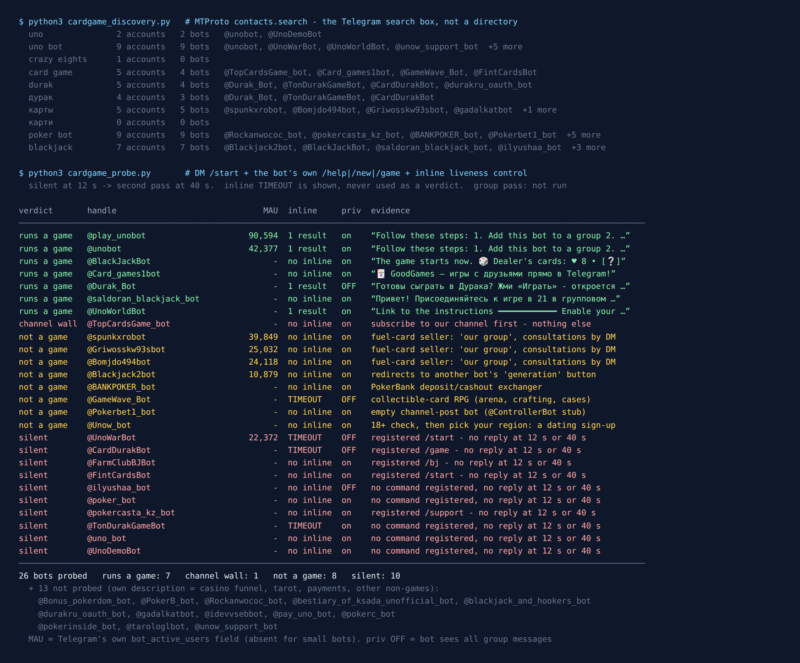

Telegram Card Game Bots: 39 Tested, 7 Actually Deal
Card games are the oldest thing people play in group chats, and they're awkward to run there. The problem isn't the rules. It's secrecy. Everyone at a real table holds their own hand, and a group chat is one shared screen. A bot can deal cards to the whole group, but every message it posts can be read by everyone in the chat. So a card game bot has to solve one thing before anything else: how do you show me my hand without showing it to you?
On the evening of 19 September 2026 I asked Telegram’s own search which card game bots exist, messaged every one it returned, and wrote down what each one did. It’s the same test I ran on spy game bots the night before.
39 bots came back. 7 run a card game. 10 never answered, at twelve seconds or at forty. The biggest real game bot in this list has 90,594 monthly users, which is about 700 times the biggest spy game bot. And it’s not the original. It’s a copy that exists because the original “is down sometimes”.

How the list was built
Web directories keep a bot listed for years after its server has stopped. So this list came from the platform instead. The Telegram search box runs an API method called contacts.search, and it only returns accounts that exist right now.
I fixed ten queries before measuring anything: uno, uno bot, crazy eights, card game, durak, дурак, карты and карти (“cards” in Russian and Ukrainian), poker bot and blackjack. Durak is on the list in both spellings because it’s the card game most of Telegram’s Russian and Ukrainian speakers grew up with. Wikipedia calls it “Russia’s most popular card game”, played with a 36-card deck by two to five people (Wikipedia: Durak). Poker and blackjack went in on purpose. Whether that shelf holds games or casinos was one of the things I wanted to find out.
Before sending a single message, I set aside 13 bots whose own descriptions said they weren’t games: four casino bonus funnels, two tarot readers, a channel payment bot called UnoPay, a university staff directory, a support account, a login helper for a Durak website, a chat troll, an AI assistant and a poker payout calculator. The other 26 each got the same test:
/startin a private chat, twelve seconds to reply.- The bot’s own help or new-game command, taken from the command list it registered with Telegram, never guessed.
- An inline query, recorded but not used as a verdict. Earlier tests showed live bots can still time out on it.
- Anything silent got a second pass at 40 seconds before “silent” counted. None of the ten woke up.
What I didn’t do is play a full game in a group. My test account can’t create groups, and I wasn’t going to add strangers’ bots to somebody else’s chat. “Runs a game” means the bot is up and either dealt me cards or explained a working game.
Uno solves the secret-hand problem with inline mode
Three of the seven working bots play Uno, and they all use the same trick. Here’s the reply @unobot sent to /start:
Follow these steps: 1. Add this bot to a group. 2. In the group, start a new game with /new or join an already running game with /join. 3. After at least two players have joined, start the game with /start. 4. Type @unobot into your chat box and hit space … You will see your cards (some greyed out)
Step four is the clever part. Telegram lets a bot answer inline queries: you type the bot’s username in any chat, and the bot sends back a list of results that pops up above your keyboard before you’ve sent anything (core.telegram.org/bots/inline). The list is built for the person who typed. So when it’s your turn, you type @unobot, your own hand appears as a row of cards only you can see, and you tap one to play it into the group. The cards you can’t legally play show up greyed out.
That’s also why these bots don’t need to read your chat. All three Uno bots keep Telegram’s default privacy mode on. Moves come in as inline picks and commands, not as ordinary messages. When I sent the inline query outside a game, both @unobot and @play_unobot answered instantly: “Not playing right now. Use /new to start a game or /join to join the current game in this group.”
The code behind @unobot is public. It’s the mau_mau_bot project on GitHub, released under AGPL-3.0 and described as a bot that “allows you to play the popular card game UNO via inline queries”. The name is a nod to the family tree. Uno is a proprietary Mattel game, but Wikipedia traces it to “the crazy eights family of card games which, in turn, is based on the traditional German game of mau-mau” (Wikipedia: Uno).
The copy is twice as big as the original
Here’s what surprised me most. @play_unobot describes itself as “Same as @unobot, just hosted on a different server because unobot is down sometimes.” Same open-source code, a different person’s server. Telegram counts 90,594 monthly users on the copy and 42,377 on the original.
So more than twice as many people play Uno through the backup as through the real thing. I can’t see why from the outside. The obvious guess is the one in its own description: a group whose game froze once on the original moved to the mirror and stayed. Both answered me within twelve seconds on the night I tested, with the same instructions word for word.
The third Uno bot, @UnoWorldBot, calls itself the “global version of @UnoGABot” and replied with a link to instructions, a /settings command for stats and a button to its main group. It has a history, too. @unobot still ends its welcome with “Also check out @UnoDemoBot, a newer version of this bot”. @UnoDemoBot now just says it has been renamed to @UnoWorldBot, and didn’t answer /start itself. A pointer to a pointer: that’s how bot recommendations age.
And one Uno bot with a big audience didn’t answer at all. @UnoWarBot has 22,372 monthly users by Telegram’s count, registered /start, /help and /top, and sent nothing at twelve seconds or forty. Its inline query timed out, which means Telegram forwarded the query and no server answered. It also has privacy mode off. It may still work in the groups it’s already in. From a private chat I couldn’t tell.
Want a round without adding a bot?
The free Party Game runs inside Telegram itself, so there’s nothing to add to your group, no admin rights, and nothing reading the chat: Would You Rather, Never Have I Ever, Truth or Dare and quiz rounds, from two players up.
Open the Party Game No Telegram? It runs in a browser too: charliemorrison.dev/party-gameBlackjack: the only one that dealt me a hand
Every other working bot explained itself. @BlackJackBot just started. Its first reply to /start was “The game starts now,” the dealer’s eight of hearts with one card face down, and then my hand: five and ace of hearts, “Value: 16”, with Hit and Stand buttons underneath. In a private chat thereSolo blackjack in a private chat needs no hidden hand. It’s just you against the dealer, which is why it could skip the setup.rsquo;s nobody to hide your hand from. ItSolo blackjack in a private chat needs no hidden hand. It’s just you against the dealer, which is why it could skip the setup.rsquo;s just you against the dealer, which is why it could skip the setup.
It’s open source too: Python-BlackJackBot on GitHub, GPL-3.0, “to play the game BlackJack alone or with your friends”. Its description says you can add it to a group. There are no stakes and no shop. If you want a card game you can open in ten seconds on a bus, this is it.
@saldoran_blackjack_bot is the group version: “Join a game of 21 in a group chat.” In private it refused my /newgame with “You don’t have permission to use this bot”, which fits a bot meant for groups only. It registers a /daily command, which usually means a free coin allowance. @ilyushaa_bot lists the same kind of setup in its description, with a lobby, a /join bet, a /daily payout and money transfers between players. It didn’t answer either pass.
Durak: no free group bot answered
I expected Durak to be the richest part of the list. Three bots came back for it, in both spellings, and none of them is a simple free game you can add to a chat and play tonight.
@Durak_Botanswered straight away with a Play button that opens a Mini App. Its own profile says what it’s for: “Play Durak Online, beat your rivals and earn Telegram Stars. Withdraw them to your wallet in 5 min.” That’s a game where you play strangers for something you can cash out, not a game for your friends’ group. It also has privacy mode off.@TonDurakGameBotis “a card game built on TON”, the crypto network. It sent nothing, and its inline query timed out.@CardDurakBotis the one I wanted: “Free bot for playing cards. Add the bot to the chat for a game,” with/game,/roomsand/scoresregistered. It didn’t answer/startor/helpat either pass, and its inline query timed out. Its profile says to write to its maker if the bot isn’t working.
One more bot might cover it. @Card_games1bot (“GoodGames — games with friends right in Telegram”) opens a Mini App, and its help says you can create a private table with a lock and share the link. It came back for card game, not for Durak, and I didn’t open the app, so I can’t say which games are inside.
Searching “cards” finds everything except card games
This was the most useful result of the night, and it isn’t about any single bot.
карты(“cards” in Russian) returned five bots and no games. Two are tarot readers, and the top three answered/startwith the same kind of message: “OUR GROUP”, a link, and a contact for “consultations”. The groups are named after fuel and petrol stations, so these look like sellers of fuel cards. Between them Telegram counts 89,000 monthly users.poker botreturned nine bots and no games. Four are casino bonus funnels with free-spin links. One is a deposit and cash-out desk for a poker site, “at 47 hryvnia per dollar”. One is an empty channel-post bot. The rest are an AI assistant, a payout calculator and a silent account.blackjackdid better, but the bot with the biggest audience,@Blackjack2bot(10,879 monthly users), just says “Our bot is @akulapubgbot” with a button labelled “MAKE A GENERATION”.crazy eightsreturned no bots at all, andкарти(Ukrainian) returned nothing, not even an account.- The
uno botquery also returned@Unow_bot, which asked me to confirm I’m 18 and then pick my region. That’s a dating sign-up flow, not Uno.
The lesson matches what I found with “spy bot” the night before. If you search the generic word, you get whatever has the most traffic using that word, and games don’t win that race. Search the game’s name. uno and blackjack find games. cards and poker find money.
Names that do nothing
Ten bots sent nothing, twice: @UnoWarBot, @CardDurakBot, @TonDurakGameBot, @UnoDemoBot, @uno_bot, @poker_bot, @FarmClubBJBot, @FintCardsBot, @ilyushaa_bot and @pokercasta_kz_bot. Some are dead. Some may only work in groups. A few are prime handles, like @uno_bot and @poker_bot, with no description, no commands and no reply. Somebody holds the name and runs nothing on it.
One more answered and did nothing useful. @TopCardsGame_bot replied only “You’re not subscribed to the channel. Please subscribe to continue.” I didn’t subscribe.
Ten silent out of 26 is a better ratio than spy games, where 29 of 43 never answered. Card game bots seem to live longer. That fits the Uno numbers: a game people already know how to play keeps its players, so someone keeps the server running.
How I would pick one tonight
- Search the game’s name, not “cards” or “poker”. The generic words return fuel cards, tarot and casinos.
- For a group: Uno. Add
@unobotor@play_unobot, start with/new, and everyone plays from their own inline hand. If one of them stalls mid-game, the other runs the same code. The official rules are one page from Mattel (UNO rules PDF). - Alone, for five minutes:
@BlackJackBot. It deals on/start, with no stakes and no shop. - Durak with friends: nothing I tested was both free and working in a group that night. Be careful with anything that pays out Stars or runs on TON. That’s a different kind of game.
- Send
/startin private and wait fifteen seconds before adding anything to your group. Ten of the 26 I messaged never answered.
If you’re planning the whole evening, the game night guide covers what breaks first in a busy chat, and the party games list has games that need no bot at all. For two people rather than a group, try the two-player list — or the board game census, where chess, checkers and backgammon solve the shared-surface problem three different ways.
For a group that would rather not add a bot
The Telegram Party Pack is 255 group-chat prompts — 45 Never Have I Ever statements, 30 Would You Rather dilemmas, 110 Truth or Dare — as copy-paste text and ready-made poll blocks. It has no card games in it. It’s for the nights when you want the chat to play without handing a stranger’s bot a seat in it.
Get the pack — $9.99 Or see which spy game bots still answer.What I could not test
No game was played to the end. I got dealt one blackjack hand and read three sets of Uno instructions. A bot can explain its rules perfectly and still freeze on the fourth turn.
Silent is not dead. Some of these bots may ignore private messages on purpose and work fine in the groups they’re already in. @UnoWarBot’s 22,372 users suggest that at least one of them does.
The fuel-card reading is from names. Those bots only sent a group link and a contact. I didn’t follow either, so “fuel cards” comes from the group names, not from a price list.
Bots change fast, so the date at the top matters. Fifteen seconds of /start beats any list, this one included.